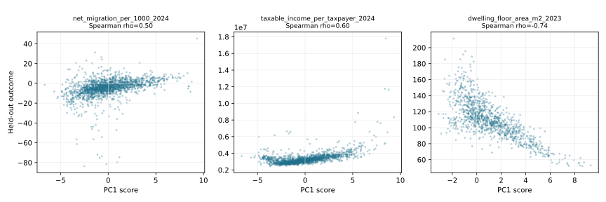

e-Statの公式データから、地理的に重複しない1,740市区町村を構成。
Constructed a geographically non-overlapping set of 1,740 municipalities from official e-Stat data.
公開コードPublic code
公式統計から全国市区町村の都市化軸を構築し、将来時点の外部指標で検証した分析。
A nationwide municipal urbanization axis built from official statistics and validated against later external outcomes.
技術スタック / Tech Stack
00

01
e-Statの公式データから、地理的に重複しない1,740市区町村を構成。
Constructed a geographically non-overlapping set of 1,740 municipalities from official e-Stat data.
市と特別区・政令市区の重複を解消し、PC1が標準化変数の分散の80.27%を説明。
Resolved city/ward overlap, with PC1 explaining 80.27% of variance in standardized indicators.
後年の人口密度、DID比率、農地比率で外部検証し、仕様感度も確認。
Validated against later population density, DID share, and farmland share, with specification sensitivity checks.
02
単一指標では捉えにくい市区町村の都市化度を、全国で比較可能な形に要約する。
Summarize multidimensional municipal urbanization in a form comparable nationwide.
公式統計の人口密度、土地利用、産業構造などを整備し、標準化PCAで合成軸を作る。
Prepare official density, land-use, and industrial-structure indicators and derive a standardized PCA axis.
ブートストラップ、代替仕様、後年の未使用外部指標との順位相関で検証する。
Validate with bootstrap stability, alternative specifications, and rank correlations with later held-out indicators.
PC1は80.27%を説明し、外部指標とのSpearman相関は0.498、0.597、-0.738。
PC1 explains 80.27%; Spearman correlations with held-out outcomes are 0.498, 0.597, and -0.738.
03
記述的な合成指標であり、公式分類、因果効果、政策上の順位付けではない。
This is a descriptive composite index, not an official classification, causal effect, or policy ranking.
04
公開コードPublic code
公式公開データ、出典記録、再現コード、検証図を備えた独立リポジトリとして公開可能。
Official open data, provenance, reproducible code, and validation figures support a standalone public release.